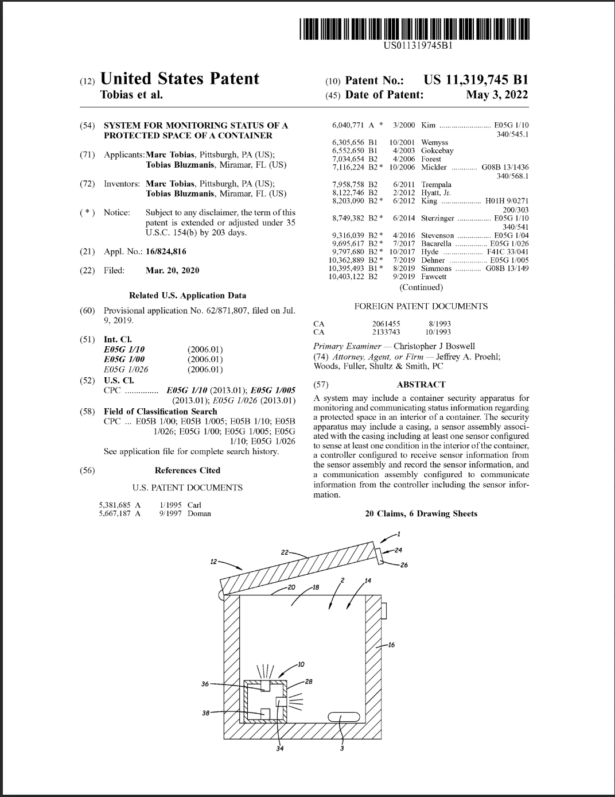
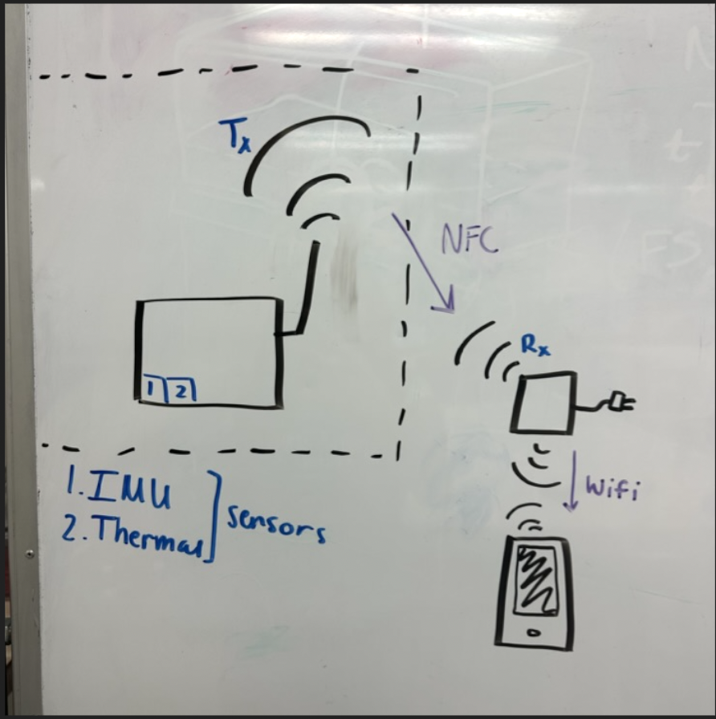
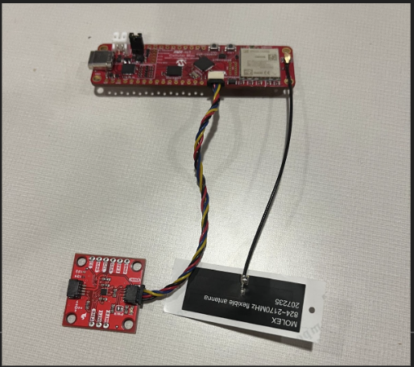
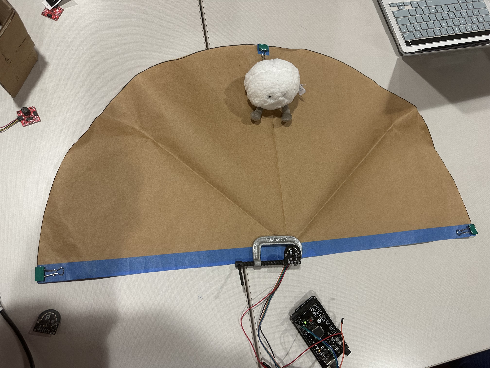
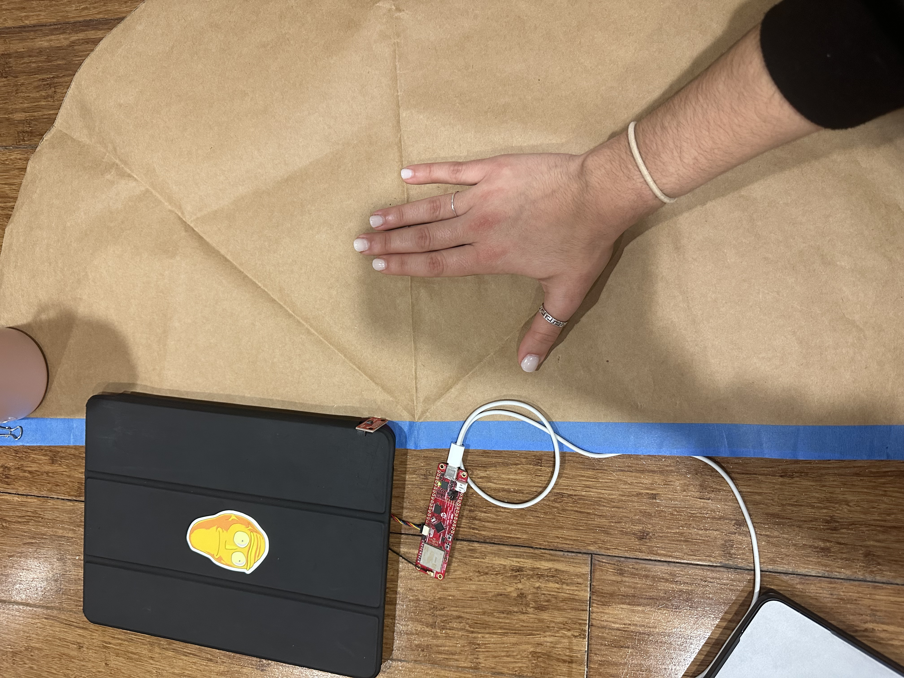

The objective of the project was to create a secure and controlled environment for medication storage by developing an enclosed safe space equipped with advanced sensors. The implementation involves integrating a human presence and motion sensor and an accelerometer sensor within a compact box, which is strategically placed inside a medicine cabinet. The primary goal is to detect and prevent unauthorized access, particularly by children, to the medication. This innovative solution aims to enhance safety in environments like patient homes, doctor offices, and pharmacies, mitigating the risk of accidental ingestion or misuse of drugs by implementing proactive measures through sensor technology.

Patent Distribution
We received a patent to begin our project efforts.

Revision 01
Initial prototype sketch with 2 sensors, a transceiver and receiver. Customer feedback determined that it was unfavorable to have a separate receiving component

A Look Inside
Electronic components used in final prototype.

Verification testing setup
I led the testing protocols and participated in design fabrication and review for the product.

Testing
Human Presence Sensor Verification Testing